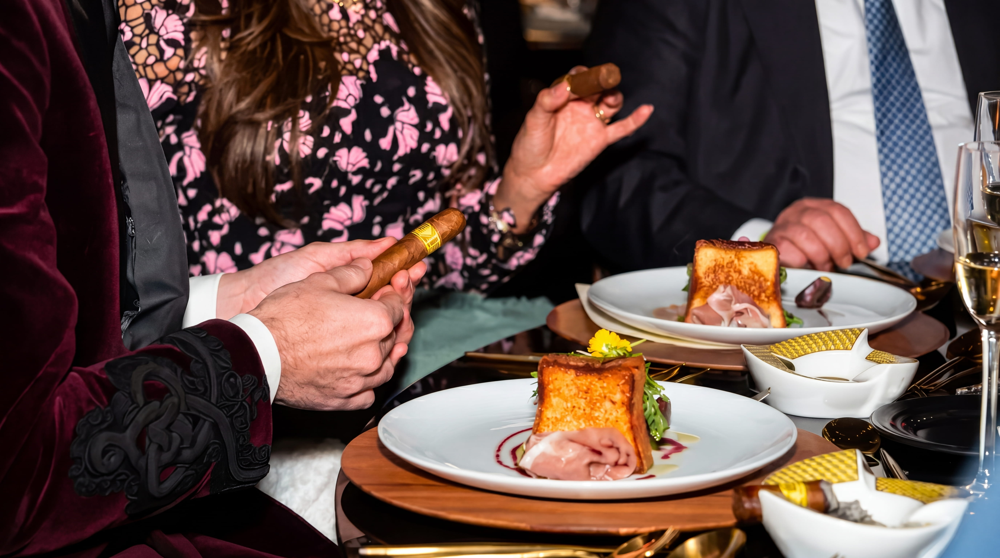
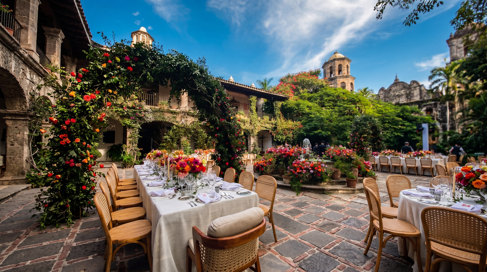
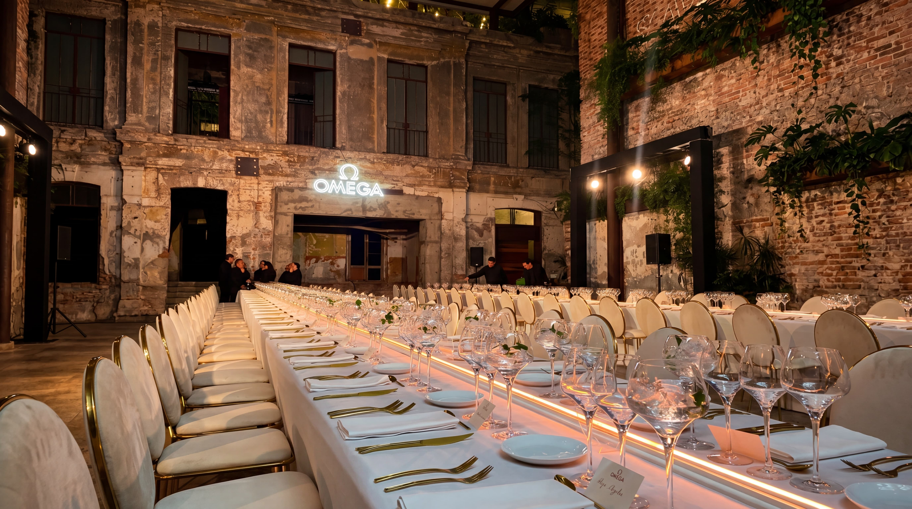
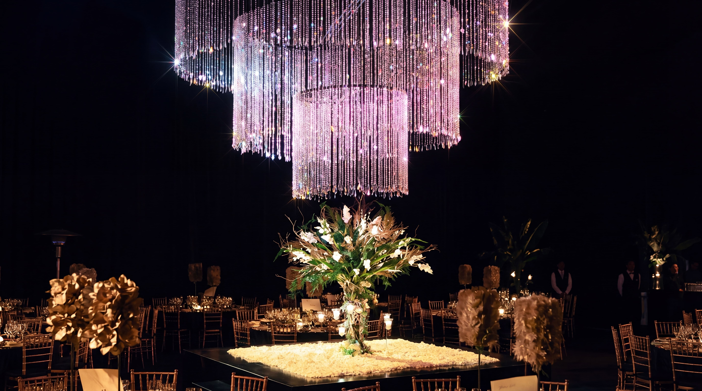

CELEBRACIONES a la medida
No ofrecemos paquetes. Cada evento comienza con una conversación.

BODAS
Una boda es probablemente el evento más detallado que la mayoría de las personas organizará en su vida. Nuestro trabajo es que usted no lo sienta. Nos hacemos cargo del banquete completo, desde el coctel de bienvenida hasta la última copa de la noche, para que su atención esté donde debe estar.
Trabajamos con ceremonias civiles, religiosas y judías. Coordinamos con su wedding planner o asumimos la coordinación completa del banquete cuando se requiere.

CORPORATIVOe institucional
Cenas oficiales, recepciones diplomáticas, cumbres internacionales, lanzamientos de producto, reuniones de directivos. Los eventos donde el servicio no es fondo sino protocolo.
Operamos con discreción total, personal bilingüe y la capacidad logística para atender eventos de gran escala en cualquier punto de México.

CELEBRACIONESprivadas
Reuniones familiares, cumpleaños importantes, aniversarios, cenas íntimas. Menores en escala, idénticos en atención. Trabajamos igual de bien en una residencia privada que en un salón o una hacienda.
Banquetes kosher disponibles para todos los formatos, certificados bajo supervisión rabínica.
¿NO SABE BIEN QUE formato necesita?
Cuéntenos lo que tiene en mente. Nosotros nos encargamos del resto.
Solicitar cotización